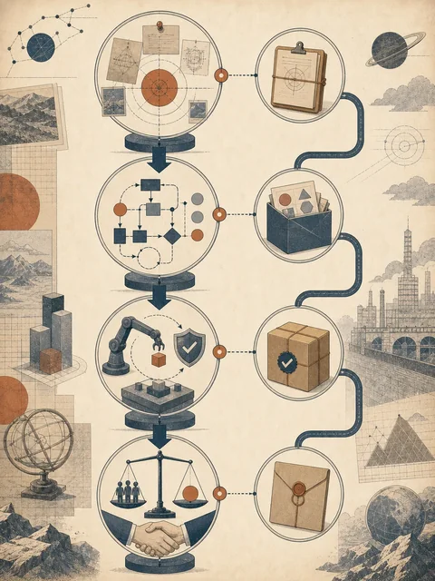
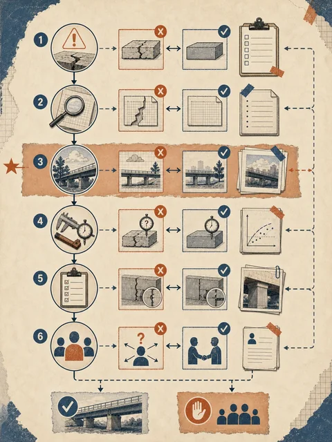

第 1–2 周
建立共同语言；产物是任务说明单、上下文包和工具边界表
用一份新的会前决策包检验整套判断链
 VER. 2608.1
Built with impress.js
VER. 2608.1
Built with impress.js
本节结束时，你能用一个新任务交出连续的判断材料
三份材料：项目状态更新、供应商报价、上次会议决定
部门负责人需要会前看清待决定事项、证据缺口和责任人
状态更新｜2026-06-20；报价｜2026-06-19；会议决定｜2026-06-13
仅限内部使用；报价不含税与运输费，不能改写成总成本；不得自动批准
每个决策项有来源、日期、状态和责任人；缺税费时标 unknown 并交财务
每一阶段都交出一份能被下一阶段使用的材料
任务说明单、上下文包、工具边界表 → 交给工作流画布
工作流画布、节点产物、检查点表 → 交给授权和测试
状态／授权／停止记录、Skill、测试记录 → 交给职责矩阵和试点
职责矩阵、试点、互评记录 → 形成采用、修改、暂停或退出决定

每周都为下一周提供对象、标准或边界
建立共同语言；产物是任务说明单、上下文包和工具边界表
画工作流；产物是节点画布、检查点表和异常记录
控制智能体并固化 Skill；产物是授权/停止记录、Skill 和测试记录
组织分工、试点、汇报和互评；产物是职责矩阵、试点方案和修改记录
先定任务，再解释工具、过程、检查、自主和复用

遇到智能体题目，先把循环中的控制条件写出来
完成条件是什么，失败时不再继续什么
每轮记录什么，让下一轮能看见已完成、缺证还是待决定
能读、写和行动到哪里；权限、最大轮数和哪些外部动作不在授权内
什么结果改变下一步，如何把错误、缺口或新证据写回状态
何时结束、回退或交还给人，由谁接管并接收哪些证据
复用和组织问题都在追问谁能继续、谁承担责任
Skill 说明书和测试记录：适用条件、输入、步骤、检查、版本、失败和限制
职责矩阵和试点方案：角色、权限、成本、维护、责任人、暂停和退出
同一个新任务贯穿五张记录，后一张接着前一张写
任务、使用者、输入、限制和完成标准
模型、工具、脚本或人工；权限和失败方式
五个节点、两个检查点、中间产物、依赖和责任人
状态、授权、反馈、停止和接管证据包
预期、失败、复测；责任人、批准、维护和退出
交付任务说明、工具边界和工作流画布；通过：输入、限制、节点和完成标准齐全
交付最早失败节点、证据、修复和回退；通过：同一输入可复测，责任人明确
交付状态、授权、反馈、最大轮数、停止和接管包；通过：越界可停，接管者和证据齐全
交付职责矩阵、试点和退出线；通过：成本、维护、暂停和退出责任清楚
课程材料应当能在下一次真实任务中继续使用
| 阶段 | 工具包 | 它回答什么 |
|---|---|---|
| 定义 | 任务说明单、上下文包、工具边界表 | 任务是什么，哪些材料和工具可以进入 |
| 组织 | 工作流画布、检查点表、异常记录 | 节点如何衔接，哪里检查，失败回到哪里 |
| 控制与复用 | 状态/授权记录、Skill、测试与失败记录 | 能否受控运行，能否复测和保留限制 |
| 组织采用 | 职责矩阵、试点方案、互评修改记录 | 谁负责，何时采用或退出，如何迁移 |
技术、工具和组织条件会变化，但判断链仍然可以继续更新
来源、版本、权限和完成标准是否变了
失败样例、检查点和停止条件是否仍然有效
谁判断、批准、维护和接管是否仍然清楚
把下一次任务做得更清楚、更可验证、更有边界，就是课程的延续
智能技术的应用是一套由人承担责任的工作安排
从文化想象到任务、工具和工作流
输入、节点、产物、检查、证据和异常
目标、状态、授权、停止和人工接管
Skill、测试、职责、试点、互评和持续改进
把判断留给需要承担后果的人，自动化才真正有用